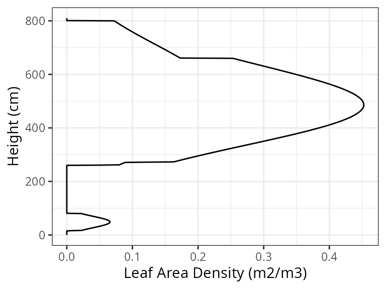
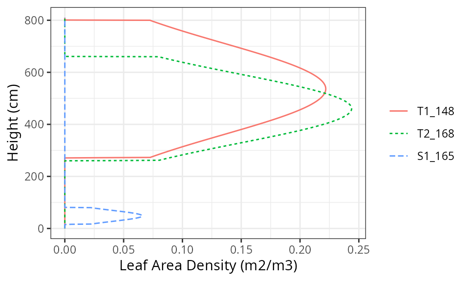
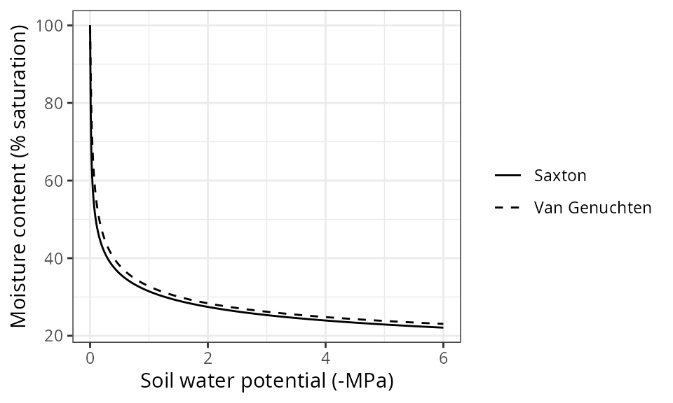

Understanding model inputs
Miquel De Caceres
2025-05-22
Source:vignettes/intro/UnderstandingInputs.Rmd
UnderstandingInputs.RmdAbout this article
Any process-based model of forest functioning and dynamics needs
information on climate, vegetation and
soils of the forest stand to be simulated. Moreover,
since medfate allows simulating cohorts belonging to
different species, species-specific parameters are also
needed. Finally, simulation control parameters may need
to be changed, depending on the goals of the simulation. This article
explains data structures required as input to run simulations using the
package so that the user can understand them. A companion article Preparing
model inputs provides a practical example to illustrate how to
create model inputs and some common problems encountered.
Species parameter tables
Simulation models in medfate require a data frame with
species (taxon) parameter values. The package includes a default data
sets to be readily used. The values of the parameter table were obtained
from global trait data bases, bibliographic searches, fit to empirical
data or expert-based guesses:
data("SpParamsMED") # For the Spanish forest inventory (including taxon groups)A large number of parameters (columns) can be found in species
parameter tables. Not all parameters are needed for all models. You can
find parameter definitions in table SpParamsDefinition,
which we reproduce below:
| ParameterName | Definition | Type | Units | Strict |
|---|---|---|---|---|
| Name | Plant names (species binomials, genus or other) used in vegetation data | String | NA | TRUE |
| SpIndex | Internal species codification (0,1,2,) | Integer | NA | TRUE |
| AcceptedName | Accepted scientific name of a taxon (genus, species, subspecies or variety) used for parameterization | String | NA | FALSE |
| Species | Taxonomic species of accepted name | String | NA | FALSE |
| Genus | Taxonomic genus of accepted name | String | NA | TRUE |
| Family | Taxonomic family of accepted name | String | NA | TRUE |
| Order | Taxonomic order of accepted name | String | NA | TRUE |
| Group | Either “Gymnosperm” or “Angiosperm” | String | NA | TRUE |
| GrowthForm | Growth form: Either “Shrub”, “Tree” or “Tree/Shrub” | String | Categorical | TRUE |
| LifeForm | Raunkiaer life form | String | Categorical | TRUE |
| LeafShape | Broad/Needle/Linear/Scale/Spines/Succulent | String | Categorical | TRUE |
| LeafSize | Either “Small” (< 225 mm), “Medium” (> 225 mm & < 2025 mm) or “Large” (> 2025 mm) | String | Categorical | TRUE |
| PhenologyType | Leaf phenology type, either “oneflush-evergreen” (new leaves develop in spring-summer), “progressive-evergreen” (new leaves develop during any season), “winter-deciduous” (leaf senescence in autumn, new leaves in spring-summer) or “winter-semideciduous” (same as before, but abscission of senescent leaves occurs when new leaves are produced). | String | Categorical | TRUE |
| DispersalType | Dispersal type, either wind-dispersed or animal-dispersed | String | Categorical | TRUE |
| Hmed | Median plant height | Numeric | cm | TRUE |
| Hmax | Maximum plant height | Numeric | cm | TRUE |
| Dmax | Maximum tree diameter | Numeric | cm | FALSE |
| Z50 | Depth corresponding to 50% of fine roots | Numeric | mm | FALSE |
| Z95 | Depth corresponding to 95% of fine roots | Numeric | mm | TRUE |
| fHDmin | Minimum value of height-diameter ratio | Numeric | NA | FALSE |
| fHDmax | Maximum value of height-diameter ratio | Numeric | NA | FALSE |
| a_ash | Allometric coefficient for shrub area as function of height | Numeric | NA | FALSE |
| b_ash | Allometric coefficient for shrub area as function of height | Numeric | NA | FALSE |
| a_bsh | Allometric coefficient for fine fuel shrub biomass (dry weight) | Numeric | NA | FALSE |
| b_bsh | Allometric coefficient for fine fuel shrub biomass (dry weight) | Numeric | NA | FALSE |
| a_btsh | Allometric coefficient for total fuel shrub biomass (dry weight) | Numeric | NA | FALSE |
| b_btsh | Allometric coefficient for total fuel shrub biomass (dry weight) | Numeric | NA | FALSE |
| cr | Proportion of total height corresponding to the crown (i.e. Crown length divided by total height) | Numeric | [0-1] | FALSE |
| BTsh | Shrub bark thickness | Numeric | mm | FALSE |
| a_fbt | Regression coefficient for tree foliar biomass | Numeric | NA | FALSE |
| b_fbt | Regression coefficient for tree foliar biomass | Numeric | NA | FALSE |
| c_fbt | Regression coefficient for tree foliar biomass | Numeric | NA | FALSE |
| a_cr | Regression coefficient for crown ratio | Numeric | NA | FALSE |
| b_1cr | Regression coefficient for crown ratio | Numeric | NA | FALSE |
| b_2cr | Regression coefficient for crown ratio | Numeric | NA | FALSE |
| b_3cr | Regression coefficient for crown ratio | Numeric | NA | FALSE |
| c_1cr | Regression coefficient for crown ratio | Numeric | NA | FALSE |
| c_2cr | Regression coefficient for crown ratio | Numeric | NA | FALSE |
| a_cw | Regression coefficient for crown width | Numeric | NA | FALSE |
| b_cw | Regression coefficient for crown width | Numeric | NA | FALSE |
| a_bt | Regression coefficient for bark thickness (mm) as function of DBH (cm) | Numeric | NA | FALSE |
| b_bt | Regression coefficient for bark thickness (mm) as function of DBH (cm) | Numeric | NA | FALSE |
| LeafDuration | Duration of leaves in year | Numeric | years | FALSE |
| t0gdd | Date to start the accumulation of degree days | Numeric | days | FALSE |
| Sgdd | Degree days for leaf budburst | Numeric | Degrees C | FALSE |
| Tbgdd | Base temperature for the calculation of degree days to leaf budburst | Numeric | Degrees C | FALSE |
| Ssen | Degree days corresponding to senescence | Numeric | Degrees C | FALSE |
| Phsen | Photoperiod corresponding to start counting senescence | Numeric | hours | FALSE |
| Tbsen | Base temperature for the calculation of degree days to senescence | Numeric | Degrees C | FALSE |
| xsen | Discrete values, to allow for any absent/proportional/more than proportional effects of temperature on senescence | Integer | {0,1,2} | FALSE |
| ysen | Discrete values, to allow for any absent/proportional/more than proportional effects of photoperiod on senescence | Integer | {0,1,2} | FALSE |
| SLA | Specific leaf area (mm2/mg = m2/kg) | Numeric | m2/kg | FALSE |
| LeafDensity | Density of leaf tissue (dry weight over volume) | Numeric | g/cm3 | FALSE |
| WoodDensity | Wood tissue density (at 0% humidity!) | Numeric | g/cm3 | FALSE |
| FineRootDensity | Density of fine root tissue (dry weight over volume). | Numeric | g/cm3 | FALSE |
| conduit2sapwood | Proportion of sapwood corresponding to conducive elements (vessels or tracheids) as opposed to parenchymatic tissue. | Numeric | [0,1] | FALSE |
| r635 | Ratio of foliar (photosynthetic) + small branches (<6.35 mm) dry biomass to foliar (photosynthetic) dry biomass | Numeric | >=1 | FALSE |
| pDead | Proportion of total fine fuels that are dead | Numeric | [0,1] | FALSE |
| Al2As | Leaf area to sapwood area ratio | Numeric | m2 / m2 | FALSE |
| Ar2Al | Root area to leaf area ratio | Numeric | m2 / m2 | FALSE |
| LeafWidth | Leaf width | Numeric | cm | FALSE |
| SRL | Specific root length | Numeric | cm/g | FALSE |
| RLD | Fine root length density (density of root length per soil volume) | Numeric | cm/cm3 | FALSE |
| maxFMC | Maximum fuel moisture (in percent of dry weight) | Numeric | % | FALSE |
| minFMC | Minimum fuel moisture (in percent of dry weight) | Numeric | % | FALSE |
| LeafPI0 | Osmotic potential at full turgor of leaves | Numeric | Mpa | FALSE |
| LeafEPS | Modulus of elasticity (capacity of the cell wall to resist changes in volume in response to changes in turgor) of leaves | Numeric | Mpa | FALSE |
| LeafAF | Apoplastic fraction (proportion of water outside the living cells) in leaves | Numeric | % | FALSE |
| StemPI0 | Osmotic potential at full turgor of symplastic xylem tissue | Numeric | Mpa | FALSE |
| StemEPS | Modulus of elasticity (capacity of the cell wall to resist changes in volume in response to changes in turgor) of symplastic xylem tissue | Numeric | Mpa | FALSE |
| StemAF | Apoplastic fraction (proportion of water outside the living cells) in stem xylem | Numeric | % | FALSE |
| SAV | Surface-area-to-volume ratio of the small fuel (1h) fraction (leaves and branches < 6.35mm) | Numeric | m2/m3 | FALSE |
| HeatContent | High fuel heat content | Numeric | kJ/kg | FALSE |
| LigninPercent | Percent of lignin+cutin over dry weight in leaves | Numeric | % | FALSE |
| LeafAngle | The angle between the leaf plane and the horizontal plane (i.e. leaf zenith angle) | Numeric | degrees | FALSE |
| LeafAngleSD | Standard deviation of the leaf angle | Numeric | degrees | FALSE |
| ClumpingIndex | Canopy clumping index | Numeric | [0-1] | FALSE |
| gammaSWR | Reflectance (albedo) coefficient for SWR (gammaPAR is 0.8*gammaSWR) | Numeric | unitless | FALSE |
| alphaSWR | Absorbance coefficient for SWR (alphaPAR is alphaSWR*1.35) | Numeric | unitless | FALSE |
| kPAR | Light extinction coeficient for PAR (extinction coefficient for SWR is kPAR/1.35) | Numeric | unitless | FALSE |
| g | Canopy water storage capacity per LAI unit | Numeric | mm/LAI | FALSE |
| Tmax_LAI | Empirical coefficient relating LAI with the ratio of maximum transpiration over potential evapotranspiration. | Numeric | NA | FALSE |
| Tmax_LAIsq | Empirical coefficient relating squared LAI with the ratio of maximum transpiration over potential evapotranspiration. | Numeric | NA | FALSE |
| Psi_Extract | Water potential corresponding to 50% reduction of transpiration | Numeric | MPa | FALSE |
| Exp_Extract | Parameter of the Weibull function regulating transpiration reduction | Numeric | NA | FALSE |
| WUE | Daily water use efficiency (gross photosynthesis over transpiration) under no light, water or CO2 limitations and VPD = 1kPa | Numeric | g C * mm H2O-1 | FALSE |
| WUE_par | Coefficient regulating the influence of % PAR on gross photosynthesis | Numeric | NA | FALSE |
| WUE_co2 | Coefficient regulating the influence of atmospheric CO2 concentration on gross photosynthesis | Numeric | NA | FALSE |
| WUE_vpd | Coefficient regulating the influence of vapor pressure deficit (VPD) on gross photosynthesis | Numeric | NA | FALSE |
| Gswmin | Minimum leaf conductance (cuticular+incomplete closure) at 20C | Numeric | mol H2O * s-1 * m-2 | FALSE |
| Gswmax | Maximum stomatal conductance to water vapour | Numeric | mol H2O * s-1 * m-2 | FALSE |
| Gsw_AC_slope | Slope of the Gsw vs Ac/Cs relationship (Baldocchi model). | Numeric | mol H2O * mmol CO2-1 | FALSE |
| Gs_Toptim | Temperature corresponding to maximal stomatal conductance | Numeric | Degrees C | FALSE |
| Gs_Tsens | Stomatal sensitivity to temperature | Numeric | NA | FALSE |
| Gs_P50 | Water potential causing 50% reduction in stomatal conductance | Numeric | MPa | FALSE |
| Gs_slope | Rate of decrease in stomatal conductance at Gs_P50 | Numeric | %/MPa | FALSE |
| VCleaf_kmax | Maximum leaf hydraulic conductance | Numeric | mmol H2O * s-1 * m-2 * MPa-1 | FALSE |
| VCleaf_P12 | 12% of maximum conductance of the leaf vulnerability curve | Numeric | MPa | FALSE |
| VCleaf_P50 | 50% of maximum conductance of the leaf vulnerability curve | Numeric | MPa | FALSE |
| VCleaf_P88 | 88% of maximum conductance of the leaf vulnerability curve | Numeric | MPa | FALSE |
| VCleaf_slope | Slope of the rate of leaf embolism spread at VCleaf_P50 | Numeric | %/MPa | FALSE |
| Kmax_stemxylem | Maximum sapwood-specific hydraulic conductivity of stem xylem | Numeric | kg H2O * s-1 * m-1 * Mpa-1 | FALSE |
| VCstem_P12 | 12% of maximum conductance of the stem vulnerability curve | Numeric | MPa | FALSE |
| VCstem_P50 | 50% of maximum conductance of the stem vulnerability curve | Numeric | MPa | FALSE |
| VCstem_P88 | 88% of maximum conductance of the stem vulnerability curve | Numeric | MPa | FALSE |
| VCstem_slope | Slope of the rate of stem embolism spread at VCleaf_P50 | Numeric | %/MPa | FALSE |
| Kmax_rootxylem | Maximum sapwood-specific hydraulic conductivity of root xylem | Numeric | kg H2O * s-1 * m-1 * Mpa-1 | FALSE |
| VCroot_P12 | 12% of maximum conductance of the root vulnerability curve | Numeric | MPa | FALSE |
| VCroot_P50 | 50% of maximum conductance of the root vulnerability curve | Numeric | MPa | FALSE |
| VCroot_P88 | 88% of maximum conductance of the root vulnerability curve | Numeric | MPa | FALSE |
| VCroot_slope | Slope of the rate of root embolism spread at VCleaf_P50 | Numeric | %/MPa | FALSE |
| Vmax298 | Maximum Rubisco carboxilation rate | Numeric | mmol CO2 * s-1* m-2 | FALSE |
| Jmax298 | Maximum rate of electron transport at 298K | Numeric | mmol electrons * s-1 * m-2 | FALSE |
| Nleaf | Nitrogen mass per leaf dry mass | Numeric | mg N / g dry | FALSE |
| Nsapwood | Nitrogen mass per sapwood dry mass | Numeric | mg N / g dry | FALSE |
| Nfineroot | Nitrogen mass per fine root dry mass | Numeric | mg N / g dry | FALSE |
| WoodC | Wood carbon content per dry mass | Numeric | g C / g dry | FALSE |
| RERleaf | Maintenance respiration rates for leaves. | Numeric | g gluc * g dry-1 * day-1 | FALSE |
| RERsapwood | Maintenance respiration rates for living cells of sapwood. | Numeric | g gluc * g dry-1 * day-1 | FALSE |
| RERfineroot | Maintenance respiration rates for fine roots. | Numeric | g gluc * g dry-1 * day-1 | FALSE |
| CCleaf | Leaf construction costs | Numeric | g gluc * g dry-1 | FALSE |
| CCsapwood | Sapwood construction costs | Numeric | g gluc * g dry-1 | FALSE |
| CCfineroot | Fine root construction costs | Numeric | g gluc * g dry-1 | FALSE |
| RGRleafmax | Maximum leaf relative growth rate | Numeric | m2/cm2/day | FALSE |
| RGRsapwoodmax | Maximum sapwood growth rate relative to sapwood area (for shrubs) | Numeric | cm2/cm2/day | FALSE |
| RGRcambiummax | Maximum sapwood growth rate relative to cambium perimeter (for trees) | Numeric | cm2/cm/day | FALSE |
| RGRfinerootmax | Maximum fineroot relative growth rate | Numeric | g dry/g dry/day | FALSE |
| SRsapwood | Sapwood daily senescence rate | Numeric | Day-1 | FALSE |
| SRfineroot | Fine root daily senescence rate | Numeric | Day-1 | FALSE |
| RSSG | Minimum relative starch for sapwood growth | Numeric | [0-1] | FALSE |
| MortalityBaselineRate | Deterministic proportion or probability specifying the baseline reduction of cohort’s density occurring in a year | Numeric | Year-1 | FALSE |
| SurvivalModelStep | Time step in years of the empirical survival model depending on stand basal area (e.g. 10) | Numeric | Year | FALSE |
| SurvivalB0 | Intercept of the logistic baseline survival model depending on stand basal area | Numeric | NA | FALSE |
| SurvivalB1 | Slope of the logistic baseline survival model depending on stand basal area | Numeric | NA | FALSE |
| SeedProductionHeight | Minimum shrub height for seed production | Numeric | cm | FALSE |
| SeedProductionDiameter | Minimum tree diameter for seed production | Numeric | cm | FALSE |
| SeedMass | Seed dry mass | Numeric | mg | FALSE |
| SeedLongevity | Seedbank average longevity | Numeric | yr | FALSE |
| DispersalDistance | Distance parameter for dispersal kernel | Numeric | m | FALSE |
| DispersalShape | Shape parameter for dispersal kernel | Numeric | NA | FALSE |
| ProbRecr | Probability of recruitment within the bioclimatic envelope | Numeric | [0-1] | FALSE |
| MinTempRecr | Minimum average temperature of the coldest month for successful recruitment | Numeric | Degrees C | FALSE |
| MinMoistureRecr | Minimum value of the moisture index (annual precipitation over annual PET) for successful recruitment | Numeric | unitless | FALSE |
| MinFPARRecr | Minimum percentage of PAR at the ground level for successful recruitment | Numeric | % | FALSE |
| RecrTreeDBH | Recruitment tree dbh (typically 1 cm) | Numeric | cm | FALSE |
| RecrTreeHeight | Recruitment tree (sapling) height | Numeric | cm | FALSE |
| RecrShrubHeight | Recruitment shrub height | Numeric | cm | FALSE |
| RecrTreeDensity | Recruitment tree (sapling) density | Numeric | ind/ha | FALSE |
| RecrShrubCover | Recruitment shrub cover | Numeric | % | FALSE |
| RecrZ50 | Recruitment depth corresponding to 50% of fine roots | Numeric | mm | FALSE |
| RecrZ95 | Recruitment depth corresponding to 95% of fine roots | Numeric | mm | FALSE |
| RespFire | Probability of resprouting after fire disturbance | Numeric | [0-1] | FALSE |
| RespDist | Probability of resprouting after undefined disturbance (typically desiccation) | Numeric | [0-1] | FALSE |
| RespClip | Probability of resprouting after clipping | Numeric | [0-1] | FALSE |
| IngrowthTreeDensity | Tree density when reaching DBH of ingrowth | Numeric | cm | FALSE |
| IngrowthTreeDBH | Tree DBH of ingrowth (typically 7.5 cm) | Numeric | ind/ha | FALSE |
In order to understand the role of parameters in the model, you should read the details of model design and formulation included in the medfatebook. Details regarding how the species parameter tables are build can be found in traits4models.
Vegetation
Forest objects
Models included in medfate were primarily designed to be
ran on forest inventory plots. In this kind of data,
the vegetation of a sampled area is often described by several records
of woody plants (trees and shrubs) along with their size and species
identity. Forest plots in medfate are assumed to be in a
data structure that follows closely the Spanish national forest
inventory, but is simple enough to so that other forest sampling schemes
can be mapped onto it.
Each forest plot is represented in an object of class
forest, a list that contains several elements. Among them,
the most important items are two data frames, treeData (for
trees) and shrubData (for shrubs):
data(exampleforest)
exampleforest## $treeData
## Species N DBH Height Z50 Z95
## 1 Pinus halepensis 168 37.55 800 100 600
## 2 Quercus ilex 384 14.60 660 300 1000
##
## $shrubData
## Species Cover Height Z50 Z95
## 1 Quercus coccifera 3.75 80 200 1000
##
## $herbCover
## [1] 10
##
## $herbHeight
## [1] 20
##
## $seedBank
## [1] Species Percent
## <0 rows> (or 0-length row.names)
##
## attr(,"class")
## [1] "forest" "list"Trees are expected to be primarily described in terms of species,
diameter (DBH; cm) and height (cm), whereas shrubs are described in
terms of species, percent cover (%) and mean height (cm). Root
distribution has to be specified for both growth forms, in terms of the
depths (mm) corresponding to 50% and 95% of cumulative fine root
distribution. Functions are provided in the package to map variables in
user data frames into tables treeData and
shrubData. Information about the herb layer may be either
absent or included in an aggregated way (i.e. without distinguishing
cohorts).
While the former example illustrates the standard structure of a
forest object, users may use an alternative description,
based on leaf area index and crown ratio of woody cohorts and the herb
layer:
data(exampleforest2)
exampleforest2## $treeData
## Species N DBH Height Z50 Z95 LAI CrownRatio
## 1 Pinus halepensis NA NA 800 100 600 0.8 0.66
## 2 Quercus ilex NA NA 660 300 1000 0.5 0.60
##
## $shrubData
## Species Cover Height Z50 Z95 LAI CrownRatio
## 1 Quercus coccifera NA 80 200 1000 0.03 0.8
##
## $herbCover
## [1] NA
##
## $herbHeight
## [1] 20
##
## $herbLAI
## [1] 0.25
##
## $seedBank
## [1] Species Percent
## <0 rows> (or 0-length row.names)
##
## attr(,"class")
## [1] "forest" "list"This alternative forest form is suitable for water
balance simulations, but does not allow simulating forest dynamics.
Single-cohort forests
Although medfate has been designed to perform
simulations on multi-cohort forests, it can also handle simulations
where vegetation is described using a single cohort. Functions
tree2forest() and shrub2forest() allow
defining single-cohort forests from attributes. For example a holm oak
(Quercus ilex) forest of 4-m height and having a leaf area
index of
can be defined using:
oak_forest <-tree2forest("Quercus ilex", Height= 400, LAI = 2)The function will return a forest object where most
attributes are empty:
oak_forest## $treeData
## Species DBH Height N Z50 Z95 LAI
## 1 Quercus ilex NA 400 NA NA NA 2
##
## $shrubData
## [1] Species Height Cover Z50 Z95
## <0 rows> (or 0-length row.names)
##
## $herbCover
## [1] NA
##
## $herbHeight
## [1] NA
##
## $seedBank
## [1] Species Percent
## <0 rows> (or 0-length row.names)
##
## attr(,"class")
## [1] "forest" "list"Since density and diameter have not been provided, simulations in this case will be restricted to water balance. Moreover, note that when defining single-cohort forests all possible interactions with functionally distinct plants are neglected.
Aboveground and belowground data
We can use some functions to inspect how above-ground and
below-ground information is represented in medfate.
For example, we can use function forest2aboveground() on
the object exampleforest to show how medfate completes
above-ground information:
above <- forest2aboveground(exampleforest, SpParamsMED)
above## SP N DBH Cover H CR LAI_live LAI_expanded LAI_dead
## T1_148 148 168.0000 37.55 NA 800 0.6605196 0.84874773 0.84874773 0
## T2_168 168 384.0000 14.60 NA 660 0.6055642 0.70557382 0.70557382 0
## S1_165 165 749.4923 NA 3.75 80 0.8032817 0.03062604 0.03062604 0
## LAI_nocomp ObsID
## T1_148 1.29720268 <NA>
## T2_168 1.01943205 <NA>
## S1_165 0.04412896 <NA>Note that the call to forest2aboveground() included the
species parameter table, because species-specific allometric
coefficients are needed to calculate leaf area from tree size or shrub
percent cover and height. Moreover, note that the plant cohorts were
given unique codes that tell us whether they correspond to trees (‘T’)
or shrubs (‘S’).
Columns N, DBH and Cover
describe forest structure and are required for simulating growth, but
not for soil water balance, which only requires columns SP,
H (in cm), CR (i.e. the crown ratio),
LAI_live, LAI_expanded and
LAI_dead. Therefore, one could use alternative forest
description as starting point, i.e.:
above2 <- forest2aboveground(exampleforest2, SpParamsMED)
above2## SP N DBH Cover H CR LAI_live LAI_expanded LAI_dead LAI_nocomp
## T1_148 148 NA NA NA 800 0.66 0.80 0.80 0 0.80
## T2_168 168 NA NA NA 660 0.60 0.50 0.50 0 0.50
## S1_165 165 NA NA NA 80 0.80 0.03 0.03 0 0.03
## ObsID
## T1_148 <NA>
## T2_168 <NA>
## S1_165 <NA>Of course, the resulting data frame has missing values, whereas the
other values are directly copied from forest.
Aboveground leaf area distribution (with or without distinguishing
among cohorts) can be examined by calling function
vprofile_leafAreaDensity():
vprofile_leafAreaDensity(exampleforest, SpParamsMED, byCohorts = F)
vprofile_leafAreaDensity(exampleforest, SpParamsMED, byCohorts = T)
Belowground data
Regarding belowground information, we need vectors with depths corresponding to 50% and 95% of fine roots, which we simply concatenate from our forest data:
Z50 <- c(exampleforest$treeData$Z50, exampleforest$shrubData$Z50)
Z95 <- c(exampleforest$treeData$Z95, exampleforest$shrubData$Z95)These parameters specify a continuous distribution of fine roots.
Users can visually inspect the distribution of fine roots of
forest objects by calling function
vprofile_rootDistribution():
vprofile_rootDistribution(exampleforest, SpParamsMED)Soils
Soil physical description
Simulation models in medfate require information on the
physical attributes of soil, namely soil depth, texture, bulk density
and rock fragment content. Soil physical attributes can be initialized
to default values, for a given number of layers, using function
defaultSoilParams():
spar <- defaultSoilParams(4)
print(spar)## widths clay sand om nitrogen bd rfc
## 1 300 25 25 NA NA 1.5 25
## 2 700 25 25 NA NA 1.5 45
## 3 1000 25 25 NA NA 1.5 75
## 4 2000 25 25 NA NA 1.5 95where widths are soil layer widths in mm;
clay and sand are the percentage of clay and
sand, in percent of dry weight, om stands for organic
matter, bd is bulk density (in
)
and rfc the percentage of rock fragments. Because soil
properties vary strongly at fine spatial scales, ideally soil physical
attributes should be measured on samples taken at the forest stand to be
simulated. For those users lacking such data, soil properties are
available via SoilGrids.org.
Initialized soil object
Simulations need additional soil parameters and state variables. The
soil input for simulations is an object of class soil (also
a data frame) that is created using a function with the same name:
## [1] "soil" "data.frame"In addition to the physical soil description, this object contains soil parameters and state variables needed for soil water balance simulations:
examplesoil## widths sand clay usda om nitrogen bd rfc macro Ksat VG_alpha
## 1 300 25 25 Silt loam NA NA 1.5 25 0.0485 5401.471 89.16112
## 2 700 25 25 Silt loam NA NA 1.5 45 0.0485 5401.471 89.16112
## 3 1000 25 25 Silt loam NA NA 1.5 75 0.0485 5401.471 89.16112
## 4 2000 25 25 Silt loam NA NA 1.5 95 0.0485 5401.471 89.16112
## VG_n VG_theta_res VG_theta_sat W Temp
## 1 1.303861 0.041 0.423715 1 NA
## 2 1.303861 0.041 0.423715 1 NA
## 3 1.303861 0.041 0.423715 1 NA
## 4 1.303861 0.041 0.423715 1 NAFor example, macro specifies the macroporosity of each
layer. The meaning of all elements in the soil object can be found in
the help page for function soil().
At any time, one can show the characteristics and status of the soil
object using its summary function:
summary(examplesoil, model = "SX")## Soil depth (mm): 4000
##
## Layer 1 [ 0 to 300 mm ]
## clay (%): 25 silt (%): 50 sand (%): 25 organic matter (%): NA [ Silt loam ]
## Rock fragment content (%): 25 Macroporosity (%): 5
## Theta WP (%): 14 Theta FC (%): 30 Theta SAT (%): 49 Theta current (%) 30
## Vol. WP (mm): 32 Vol. FC (mm): 68 Vol. SAT (mm): 111 Vol. current (mm): 68
## Temperature (Celsius): NA
##
## Layer 2 [ 300 to 1000 mm ]
## clay (%): 25 silt (%): 50 sand (%): 25 organic matter (%): NA [ Silt loam ]
## Rock fragment content (%): 45 Macroporosity (%): 5
## Theta WP (%): 14 Theta FC (%): 30 Theta SAT (%): 49 Theta current (%) 30
## Vol. WP (mm): 55 Vol. FC (mm): 117 Vol. SAT (mm): 190 Vol. current (mm): 117
## Temperature (Celsius): NA
##
## Layer 3 [ 1000 to 2000 mm ]
## clay (%): 25 silt (%): 50 sand (%): 25 organic matter (%): NA [ Silt loam ]
## Rock fragment content (%): 75 Macroporosity (%): 5
## Theta WP (%): 14 Theta FC (%): 30 Theta SAT (%): 49 Theta current (%) 30
## Vol. WP (mm): 36 Vol. FC (mm): 76 Vol. SAT (mm): 123 Vol. current (mm): 76
## Temperature (Celsius): NA
##
## Layer 4 [ 2000 to 4000 mm ]
## clay (%): 25 silt (%): 50 sand (%): 25 organic matter (%): NA [ Silt loam ]
## Rock fragment content (%): 95 Macroporosity (%): 5
## Theta WP (%): 14 Theta FC (%): 30 Theta SAT (%): 49 Theta current (%) 30
## Vol. WP (mm): 14 Vol. FC (mm): 30 Vol. SAT (mm): 49 Vol. current (mm): 30
## Temperature (Celsius): NA
##
## Total soil saturated capacity (mm): 473
## Total soil water holding capacity (mm): 291
## Total soil extractable water (mm): 183
## Total soil current Volume (mm): 291
## Saturated water depth (mm): NAImportantly, the soil object is used to store the degree of moisture
of each soil layer. In particular, element W contains the
state variable that represents moisture content - the proportion of
moisture relative to field capacity - which is normally
initialized to 1 for each layer:
examplesoil$W## [1] 1 1 1 1Advanced soil plant energy and water balance modelling requires
considering the temperature of soil. Hence, Temp contains
the temperature (in degrees) of soil layers:
examplesoil$Temp## [1] NA NA NA NASoil layer temperatures are initialized to missing values, so that at the first time step they will be set to atmospheric temperature. While simple water balance modeling can be run using either Saxton’s or Van Genuchten’s equations as water retention curves, Van Genuchten’s model is forced for advanced modelling.
Users can skip the call function soil() when creating
input objects for simulations (see below).
Water retention curves
The modelled moisture content of the soil depends on the
water retention curve used to represent the
relationship between soil volumetric water content
(;
%) and soil water potential
(;
MPa). By default the Saxton (model = "SX") equations are
used to model the water retention curve, but the user may choose to
follow Van Genuchten - Mualem equations, which will give slightly
different values for the same texture:
summary(examplesoil, model="VG")## Soil depth (mm): 4000
##
## Layer 1 [ 0 to 300 mm ]
## clay (%): 25 silt (%): 50 sand (%): 25 organic matter (%): NA [ Silt loam ]
## Rock fragment content (%): 25 Macroporosity (%): 5
## Theta WP (%): 13 Theta FC (%): 30 Theta SAT (%): 42 Theta current (%) 30
## Vol. WP (mm): 29 Vol. FC (mm): 68 Vol. SAT (mm): 95 Vol. current (mm): 68
## Temperature (Celsius): NA
##
## Layer 2 [ 300 to 1000 mm ]
## clay (%): 25 silt (%): 50 sand (%): 25 organic matter (%): NA [ Silt loam ]
## Rock fragment content (%): 45 Macroporosity (%): 5
## Theta WP (%): 13 Theta FC (%): 30 Theta SAT (%): 42 Theta current (%) 30
## Vol. WP (mm): 49 Vol. FC (mm): 117 Vol. SAT (mm): 163 Vol. current (mm): 117
## Temperature (Celsius): NA
##
## Layer 3 [ 1000 to 2000 mm ]
## clay (%): 25 silt (%): 50 sand (%): 25 organic matter (%): NA [ Silt loam ]
## Rock fragment content (%): 75 Macroporosity (%): 5
## Theta WP (%): 13 Theta FC (%): 30 Theta SAT (%): 42 Theta current (%) 30
## Vol. WP (mm): 32 Vol. FC (mm): 76 Vol. SAT (mm): 106 Vol. current (mm): 76
## Temperature (Celsius): NA
##
## Layer 4 [ 2000 to 4000 mm ]
## clay (%): 25 silt (%): 50 sand (%): 25 organic matter (%): NA [ Silt loam ]
## Rock fragment content (%): 95 Macroporosity (%): 5
## Theta WP (%): 13 Theta FC (%): 30 Theta SAT (%): 42 Theta current (%) 30
## Vol. WP (mm): 13 Vol. FC (mm): 30 Vol. SAT (mm): 42 Vol. current (mm): 30
## Temperature (Celsius): NA
##
## Total soil saturated capacity (mm): 407
## Total soil water holding capacity (mm): 291
## Total soil extractable water (mm): 194
## Total soil current Volume (mm): 291
## Saturated water depth (mm): NAWhile Saxton equations use texture and organic matter as inputs, the
Van Genuchten-Mualem equations need other parameters, which are
estimated using pedotransfer functions and their names start with
VG_ (two alternative options are provided in function
soil to estimate Van Genuchten parameters). The following
code calls function soil_retentionCurvePlot() to illustrate
the difference between the two water retention models in this soil:
soil_retentionCurvePlot(examplesoil, model="both")
Low-level functions, such as soil_psi2thetaSX() and
soil_psi2thetaVG() (and their counterparts
soil_theta2psiSX() and soil_theta2psiVG()),
can be used to calculate volumetric soil moisture from the water
potential (and viceversa) using the two models. When simulating soil
water balance, the user can choose among the two models (see
control parameters below).
Meteorological forcing
All simulations in the package require daily weather inputs. The minimum weather variables that are required are minimum/maximum temperature, minimum/maximum relative humidity, precipitation and radiation. Other variables like wind speed are recommended but not required. Here we show an example of meteorological forcing data.
## dates MinTemperature MaxTemperature Precipitation MinRelativeHumidity
## 1 2001-01-01 -0.5934215 6.287950 4.869109 65.15411
## 2 2001-01-02 -2.3662458 4.569737 2.498292 57.43761
## 3 2001-01-03 -3.8541036 2.661951 0.000000 58.77432
## 4 2001-01-04 -1.8744860 3.097705 5.796973 66.84256
## 5 2001-01-05 0.3288287 7.551532 1.884401 62.97656
## 6 2001-01-06 0.5461322 7.186784 13.359801 74.25754
## MaxRelativeHumidity Radiation WindSpeed
## 1 100.00000 12.89251 2.000000
## 2 94.71780 13.03079 7.662544
## 3 94.66823 16.90722 2.000000
## 4 95.80950 11.07275 2.000000
## 5 100.00000 13.45205 7.581347
## 6 100.00000 12.84841 6.570501Simulation models in medfate have been designed to work along with data generated from package meteoland. The user is strongly recommended to resort to this package to obtain suitable weather input for medfate simulations.
Simulation control
Apart from data inputs, the behaviour of simulation models can be
controlled using a set of global parameters. The default
parameterization is obtained using function
defaultControl():
control <- defaultControl()
names(control)## [1] "fillMissingRootParams" "fillMissingSpParams"
## [3] "fillMissingWithGenusParams" "verbose"
## [5] "subdailyResults" "standResults"
## [7] "soilResults" "snowResults"
## [9] "plantResults" "plantWaterBalanceResults"
## [11] "labileCarbonBalanceResults" "plantStructureResults"
## [13] "growthMortalityResults" "leafResults"
## [15] "temperatureResults" "fireHazardResults"
## [17] "fireHazardStandardWind" "fireHazardStandardDFMC"
## [19] "transpirationMode" "soilFunctions"
## [21] "VG_PTF" "ndailysteps"
## [23] "max_nsubsteps_soil" "defaultWindSpeed"
## [25] "defaultCO2" "defaultRainfallIntensityPerMonth"
## [27] "leafPhenology" "bareSoilEvaporation"
## [29] "unlimitedSoilWater" "interceptionMode"
## [31] "infiltrationMode" "infiltrationCorrection"
## [33] "soilDomains" "rhizosphereOverlap"
## [35] "unfoldingDD" "verticalLayerSize"
## [37] "windMeasurementHeight" "segmentedXylemVulnerability"
## [39] "stemCavitationRecovery" "leafCavitationRecovery"
## [41] "lfmcComponent" "hydraulicRedistributionFraction"
## [43] "nsubsteps_canopy" "taper"
## [45] "multiLayerBalance" "sapFluidityVariation"
## [47] "TPhase_gmin" "Q10_1_gmin"
## [49] "Q10_2_gmin" "rootRadialConductance"
## [51] "averageFracRhizosphereResistance" "thermalCapacityLAI"
## [53] "boundaryLayerSize" "cavitationRecoveryMaximumRate"
## [55] "sunlitShade" "numericParams"
## [57] "leafCavitationEffects" "stemCavitationEffects"
## [59] "stomatalSubmodel" "plantCapacitance"
## [61] "cavitationFlux" "soilDisconnection"
## [63] "leafCuticularTranspiration" "stemCuticularTranspiration"
## [65] "C_SApoInit" "C_LApoInit"
## [67] "k_SSym" "fractionLeafSymplasm"
## [69] "gs_NightFrac" "JarvisPAR"
## [71] "fTRBToLeaf" "subdailyCarbonBalance"
## [73] "allowDessication" "allowStarvation"
## [75] "sinkLimitation" "shrubDynamics"
## [77] "herbDynamics" "allocationStrategy"
## [79] "phloemConductanceFactor" "nonSugarConcentration"
## [81] "equilibriumOsmoticConcentration" "minimumRelativeStarchForGrowth"
## [83] "constructionCosts" "senescenceRates"
## [85] "maximumRelativeGrowthRates" "mortalityMode"
## [87] "mortalityBaselineRate" "mortalityRelativeSugarThreshold"
## [89] "mortalityRWCThreshold" "recrTreeDBH"
## [91] "recrTreeDensity" "ingrowthTreeDBH"
## [93] "ingrowthTreeDensity" "allowSeedBankDynamics"
## [95] "allowRecruitment" "allowResprouting"
## [97] "recruitmentMode" "removeEmptyCohorts"
## [99] "minimumTreeCohortDensity" "minimumShrubCohortCover"
## [101] "dynamicallyMergeCohorts" "keepCohortsWithObsID"
## [103] "seedRain" "seedProductionTreeHeight"
## [105] "seedProductionShrubHeight" "probRecr"
## [107] "minTempRecr" "minMoistureRecr"
## [109] "minFPARRecr" "recrTreeHeight"
## [111] "recrShrubCover" "recrShrubHeight"
## [113] "recrTreeZ50" "recrShrubZ50"
## [115] "recrTreeZ95" "recrShrubZ95"Control parameters should normally be left to their default value until their effect on simulations is fully understood.
Input objects for simulation functions
Simulation functions spwb() and growth()
(and similar functions) require first combining forest, soil,
species-parameter and simulation control inputs into a single input
object (of class spwbInput or growthInput)
that is then used as input to the corresponding simulation function
along with weather data. The combination of vegetation, soil and control
inputs is done via functions spwbInput() and
growthInput(). While it requires one additional line of
code, having this additional step is handy because cohort-level
parameters and state variables initialized can then be modified by the
user (or an automated calibration algorithm) before calling the actual
simulation functions. The input objects for functions
spwb() and growth() are presented in more
detail in articles Basic
water balance and Forest
growth, respectively.
Function fordyn() is different from the other two
simulation functions, in the sense that the user enters forest, soil,
species-parameter and simulation control inputs directly into the
simulation function (in fact, fordyn() internally calls
growthInput() to initialize the input object to function
growth()).